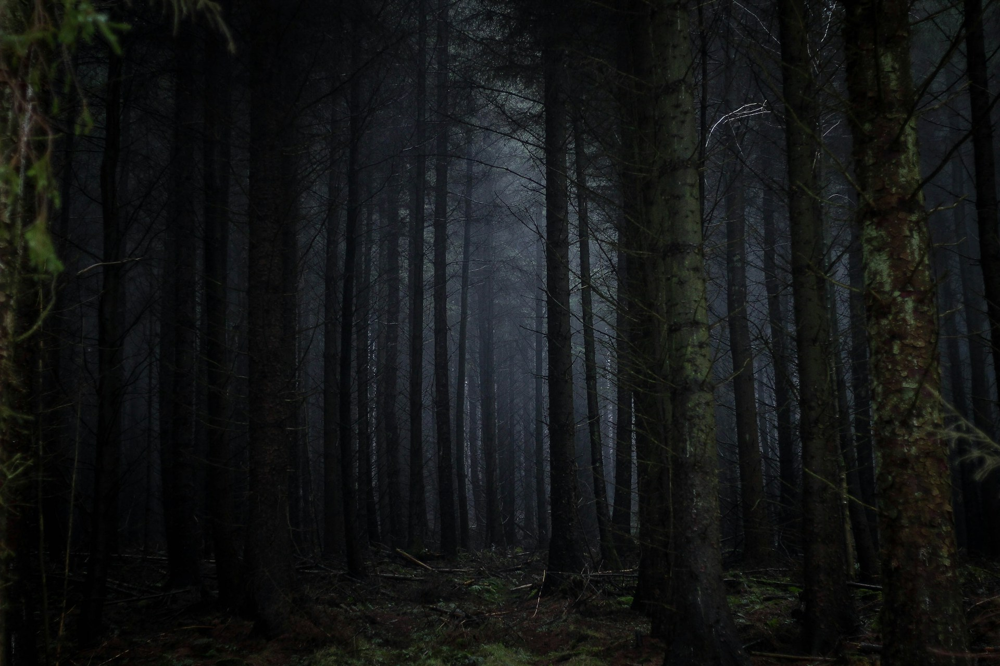

Spindle decides to press forward, ignoring the invitation.
As she goes, the tall grass towering over her, forming a maze of greens as far as the eye can reach. The sun beats down overhead, creating lengthy shadows that dance over the ground. Spindle walks for what seems like hours, her small legs propelling her farther and deeper into the grasslands.
As the day progresses, Spindle discovers she has lost her path. The once-familiar landmarks are no longer visible, and she is completely enveloped by high grass. Panic sets in as Spindle realizes she is lost and has no idea how to get back home.
Days lapse into weeks, and Spindle continues to walk the meadow, looking for an exit. She survives by chasing insects and drinking dew from the grass, but her continual fear and uncertainty take a toll. Spindle longs for the safety and security of her web, but no matter how far she goes, she never gets closer to home.
As the seasons change and the grass withers and dies, Spindle realizes she may never return. She has become a wanderer, destined to roam the grassland indefinitely, a minuscule speck lost in the enormity of the forest.
